NVIDIA Warp Documentation#
Warp is a Python framework for writing high-performance simulation and graphics code. Warp takes regular Python functions and JIT compiles them to efficient kernel code that can run on the CPU or GPU.
Warp is designed for spatial computing and comes with a rich set of primitives that make it easy to write programs for physics simulation, perception, robotics, and geometry processing. In addition, Warp kernels are differentiable and can be used as part of machine-learning pipelines with frameworks such as PyTorch and JAX.
Below are some examples of simulations implemented using Warp:

Quickstart#
The easiest way to install Warp is from PyPI:
$ pip install warp-lang
The binaries hosted on PyPI are currently built with the CUDA 11.8 runtime. Users requiring a newer CUDA runtime in Warp can build Warp from source or install wheels hosted on GitHub as described in Installing from GitHub Releases.
Basic Example#
An example first program that computes the lengths of random 3D vectors is given below:
import warp as wp
import numpy as np
num_points = 1024
@wp.kernel
def length(points: wp.array(dtype=wp.vec3),
lengths: wp.array(dtype=float)):
# thread index
tid = wp.tid()
# compute distance of each point from origin
lengths[tid] = wp.length(points[tid])
# allocate an array of 3d points
points = wp.array(np.random.rand(num_points, 3), dtype=wp.vec3)
lengths = wp.zeros(num_points, dtype=float)
# launch kernel
wp.launch(kernel=length,
dim=len(points),
inputs=[points, lengths])
print(lengths)
Additional Examples#
The warp/examples directory in
the Github repository contains a number of scripts categorized under different subdirectories
that show how to implement different simulation methods using the Warp API. Most examples
will generate USD files containing time-sampled animations in the
same directory as the example.
Before running examples, users should ensure that the usd-core, matplotlib, and pyglet packages are installed using:
pip install usd-core matplotlib pyglet
Examples can be run from the command-line as follows:
python -m warp.examples.<example_subdir>.<example>
Most examples can be run on either the CPU or a CUDA-capable device, but a handful require a CUDA-capable device. These are marked at the top of the example script.
USD files can be viewed or rendered inside NVIDIA Omniverse, Pixar’s UsdView, and Blender. Note that Preview in macOS is not recommended as it has limited support for time-sampled animations.
Built-in unit tests can be run from the command-line as follows:
python -m warp.tests
examples/core#

|

|

|
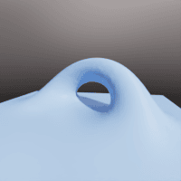 |
dem |
fluid |
graph capture |
marching cubes |

|
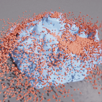 |
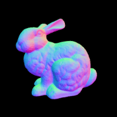 |

|
mesh |
nvdb |
raycast |
raymarch |

|

|

|
|
sph |
torch |
wave |
examples/fem#
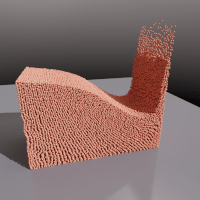 |

|
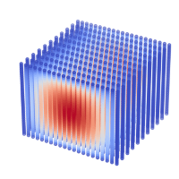 |
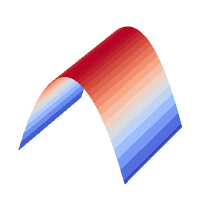 |
apic fluid |
convection diffusion |
diffusion 3d |
diffusion |
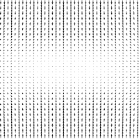 |
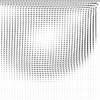 |
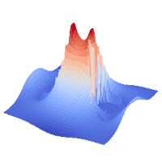 |
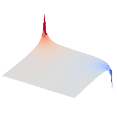 |
mixed elasticity |
navier stokes |
stokes transfer |
stokes |
examples/optim#
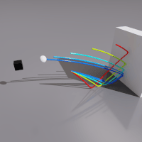 |

|

|
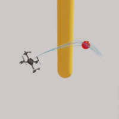 |
bounce |
cloth throw |
diffray |
drone |

|
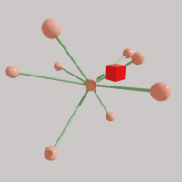 |

|

|
inverse kinematics |
spring cage |
trajectory |
walker |
examples/sim#
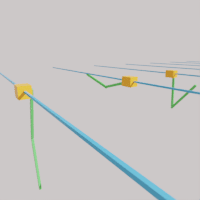 |
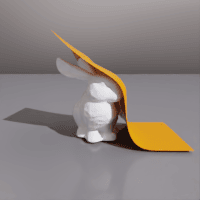 |

|

|
cartpole |
cloth |
granular |
granular collision sdf |

|

|
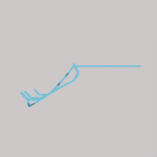 |

|
jacobian ik |
quadruped |
rigid chain |
rigid contact |

|

|
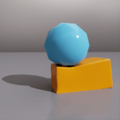 |
|
rigid force |
rigid gyroscopic |
rigid soft contact |
soft body |
Omniverse#
Omniverse extensions for Warp are available in the extension registry inside
Omniverse Kit or USD Composer.
The omni.warp.core extension installs Warp into the Omniverse Application’s
Python environment, which allows users to import the module in their scripts and nodes.
The omni.warp extension provides a collection of OmniGraph nodes and sample
scenes demonstrating uses of Warp in OmniGraph.
Enabling the omni.warp extension automatically enables the omni.warp.core extension.
Please see the Omniverse Warp Documentation for more details on how to use Warp in Omniverse.
Learn More#
Please see the following resources for additional background on Warp:
The underlying technology in Warp has been used in a number of research projects at NVIDIA including the following publications:
Accelerated Policy Learning with Parallel Differentiable Simulation - Xu, J., Makoviychuk, V., Narang, Y., Ramos, F., Matusik, W., Garg, A., & Macklin, M. (2022)
DiSECt: Differentiable Simulator for Robotic Cutting - Heiden, E., Macklin, M., Narang, Y., Fox, D., Garg, A., & Ramos, F (2021)
gradSim: Differentiable Simulation for System Identification and Visuomotor Control - Murthy, J. Krishna, Miles Macklin, Florian Golemo, Vikram Voleti, Linda Petrini, Martin Weiss, Breandan Considine et al. (2021)
Support#
Problems, questions, and feature requests can be opened on GitHub Issues.
The Warp team also monitors the #warp channel on the public Omniverse Discord server, come chat to us!
Versioning#
Versions take the format X.Y.Z, similar to Python itself:
Increments in X are reserved for major reworks of the project causing disruptive incompatibility (or reaching the 1.0 milestone).
Increments in Y are for regular releases with a new set of features.
Increments in Z are for bug fixes. In principle there are no new features. Can be omitted if 0 or not relevant.
This is similar to Semantic Versioning but less strict around backward compatibility. Like with Python, some breaking changes can be present between minor versions if well documented and gradually introduced.
Note that prior to 0.11.0 this schema was not strictly adhered to.
License#
Warp is provided under the NVIDIA Software License, please see LICENSE.md for the full license text.
Contributing#
Contributions and pull requests from the community are welcome and are taken under the terms described in the 9. Feedback section of the license. CONTRIBUTING.md. provides additional information on how to open a pull request for Warp.
Citing#
If you use Warp in your research please use the following citation:
@misc{warp2022,
title= {Warp: A High-performance Python Framework for GPU Simulation and Graphics},
author = {Miles Macklin},
month = {March},
year = {2022},
note= {NVIDIA GPU Technology Conference (GTC)},
howpublished = {\url{https://github.com/nvidia/warp}}
}
Full Table of Contents#
User's Guide
- Installation
- Basics
- Devices
- Differentiability
- Generics
- Interoperability
- Configuration
- Debugging
- Limitations
- FAQ
- How does Warp relate to other Python projects for GPU programming, e.g.: Numba, Taichi, cuPy, PyTorch, etc.?
- Does Warp support all of the Python language?
- When should I call
wp.synchronize()? - What happens when you differentiate a function like
wp.abs(x)? - Does Warp support multi-GPU programming?
- Should I switch to Warp over IsaacGym/PhysX?
- Why aren’t assignments to Warp arrays supported outside of kernels?
Advanced Topics
Core Reference
Simulation Reference